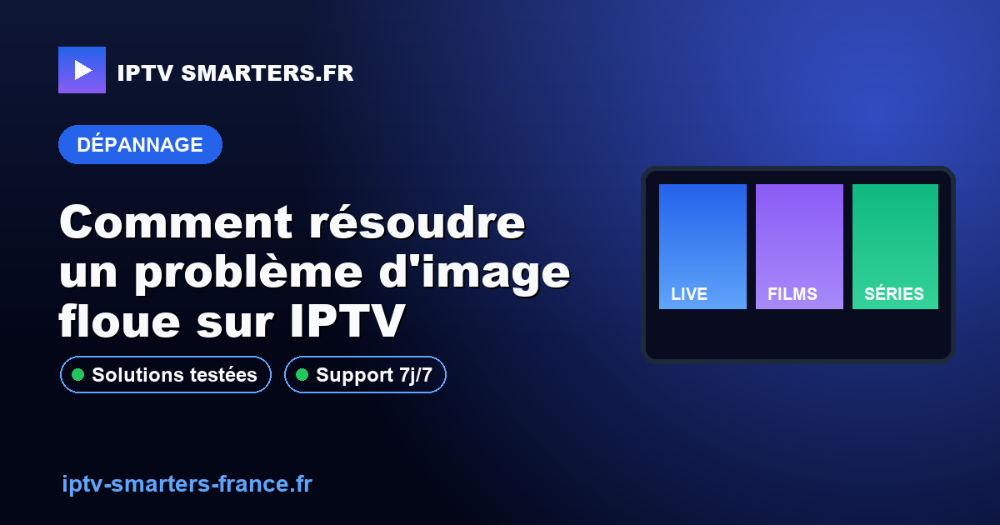

Comment résoudre un problème d'image floue sur IPTV

Une image floue sur IPTV peut être due à plusieurs facteurs, notamment la qualité du réseau, les réglages de l'appareil ou la source du flux. Pour améliorer la qualité de l'image, il est essentiel de vérifier ces éléments et d'appliquer les ajustements nécessaires. Suivez notre guide pour identifier et résoudre ces problèmes efficacement.
Contexte et prérequis
Pour diagnostiquer un problème d'image floue sur IPTV, il est important de comprendre les composants clés de votre configuration. Assurez-vous que votre connexion Internet est stable et rapide, idéalement via une connexion Ethernet ou un WiFi 5 GHz. Vérifiez également que votre appareil IPTV est compatible avec les normes HD ou 4K si votre contenu le permet.
Avant de commencer, assurez-vous d'avoir accès aux réglages de votre appareil et de votre réseau. Consultez les guides spécifiques à votre appareil, comme developer.android.com/tv pour Android TV, pour des instructions détaillées.
Méthode de test et preuves
Pour tester la qualité de votre image IPTV, commencez par vérifier votre connexion Internet. Utilisez un test de vitesse pour confirmer que votre débit est suffisant pour le streaming HD ou 4K. Comparez les performances en utilisant une connexion Ethernet et WiFi pour identifier les différences potentielles.
Ensuite, testez la qualité de l'image sur différents appareils si possible. Cela vous aidera à déterminer si le problème est lié à un appareil spécifique ou à votre réseau. Consultez également les réglages de votre application IPTV pour vous assurer qu'ils sont optimisés pour la meilleure qualité possible.
Étapes concrètes
- Vérifiez la connexion Internet: Effectuez un test de vitesse pour vous assurer que votre connexion est stable et rapide. Un débit minimum de 10 Mbps est recommandé pour le streaming HD.
- Inspectez les câbles et connexions: Assurez-vous que tous les câbles Ethernet sont correctement connectés et en bon état. Remplacez les câbles défectueux si nécessaire.
- Optimisez les réglages de l'appareil: Accédez aux paramètres de votre appareil IPTV et ajustez la résolution et la qualité d'image pour correspondre à vos capacités réseau.
- Changez de serveur ou de source: Si possible, essayez de changer de serveur ou de source de flux pour voir si la qualité d'image s'améliore.
- Redémarrez votre équipement: Parfois, un simple redémarrage de votre routeur ou de votre appareil IPTV peut résoudre des problèmes temporaires de qualité d'image.
Points de contrôle
Voici quelques points de contrôle pour vous assurer que vous avez couvert tous les aspects possibles du problème :
- Test de vitesse Internet effectué et résultats satisfaisants.
- Câbles et connexions vérifiés et en bon état.
- Réglages de l'appareil optimisés pour la meilleure qualité d'image.
- Serveur ou source de flux alternatifs testés.
- Équipement redémarré après ajustements.
Diagnostic erreurs fréquentes
Plusieurs erreurs peuvent contribuer à une image floue sur IPTV. Voici quelques-unes des plus courantes et comment les diagnostiquer :
| Erreur | Cause possible | Solution |
|---|---|---|
| Image pixélisée | Débit Internet insuffisant | Améliorez votre connexion ou réduisez la qualité du flux |
| Délai de mise en mémoire tampon | Problème de serveur | Essayez un autre serveur ou source |
| Couleurs délavées | Réglages d'affichage incorrects | Ajustez les paramètres de couleur de l'appareil |
Limites, conformité et sécurité
Il est important de noter que certains problèmes de qualité d'image peuvent être liés à des limitations de votre équipement ou de votre fournisseur de services IPTV. Assurez-vous que votre matériel est compatible avec les normes requises pour le contenu que vous souhaitez regarder.
Respectez toujours les directives légales et les conditions d'utilisation de votre fournisseur de services IPTV. En cas de doute, consultez un professionnel ou contactez notre équipe pour un diagnostic plus approfondi.
Checklist avant contact WhatsApp
- Avez-vous effectué un test de vitesse et vérifié votre connexion Internet?
- Vos câbles et connexions sont-ils en bon état?
- Avez-vous essayé de changer de serveur ou de source de flux?
- Tous les réglages de votre appareil sont-ils optimisés?
- Avez-vous redémarré votre équipement après les ajustements?
Si vous avez suivi toutes ces étapes et que le problème persiste, n'hésitez pas à contacter notre support via WhatsApp pour un diagnostic personnalisé.
FAQ
Pourquoi mon IPTV affiche-t-il une image floue?
Une image floue sur IPTV peut être causée par une connexion Internet lente, des réglages incorrects de l'appareil ou une mauvaise qualité de la source de flux. Assurez-vous que votre connexion est stable et que vos réglages sont optimisés pour la meilleure qualité d'image.
Comment améliorer la qualité d'image de mon IPTV?
Pour améliorer la qualité d'image, vérifiez votre connexion Internet, optimisez les réglages de votre appareil et essayez différentes sources de flux. Si le problème persiste, envisagez de mettre à jour votre matériel ou de consulter un professionnel pour un diagnostic plus approfondi.
Quels réglages vérifier pour une meilleure image IPTV?
Vérifiez la résolution de l'affichage, les paramètres de couleur et de contraste, ainsi que les options de qualité de flux dans votre application IPTV. Assurez-vous également que votre appareil est compatible avec les normes HD ou 4K si votre contenu le permet.
Guides liés pour continuer
Pour compléter ce diagnostic, utilisez aussi Accueil, Résoudre le buffering, Panne IPTV. Ces pages aident à relier la configuration, les pannes fréquentes et les limites légales sans mélanger les causes.